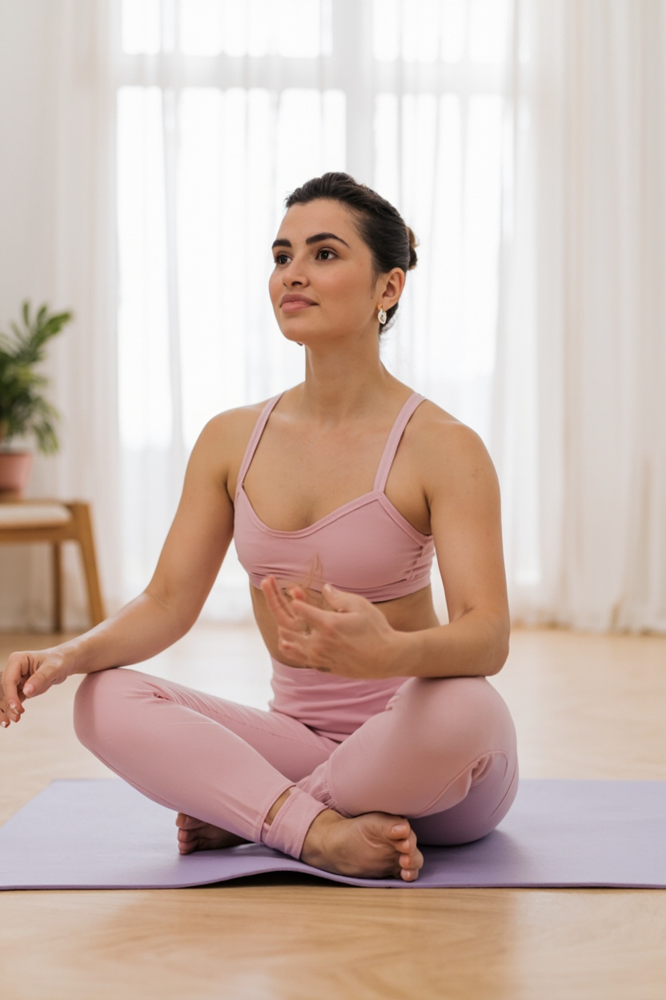
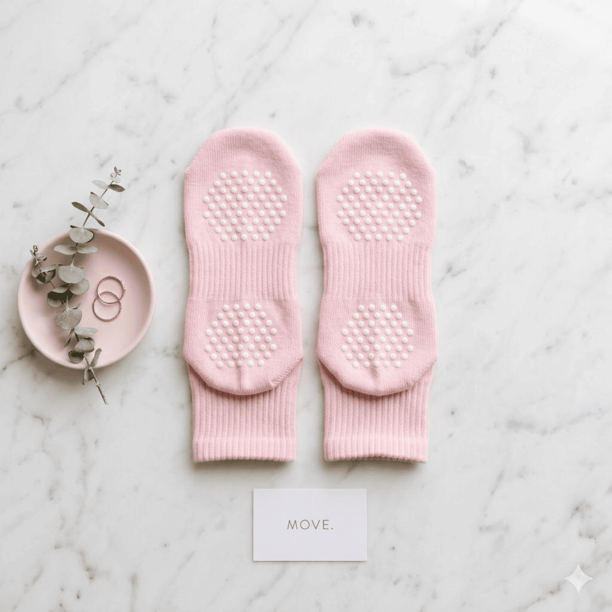
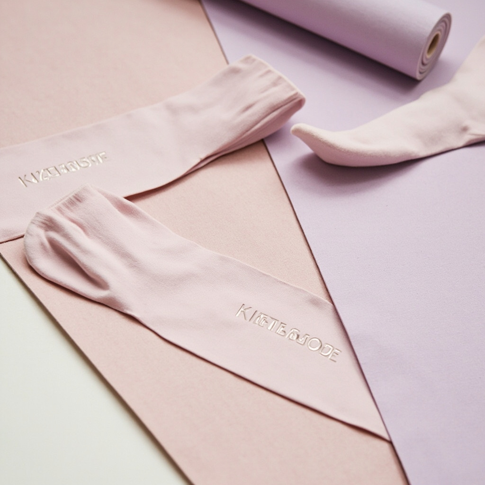
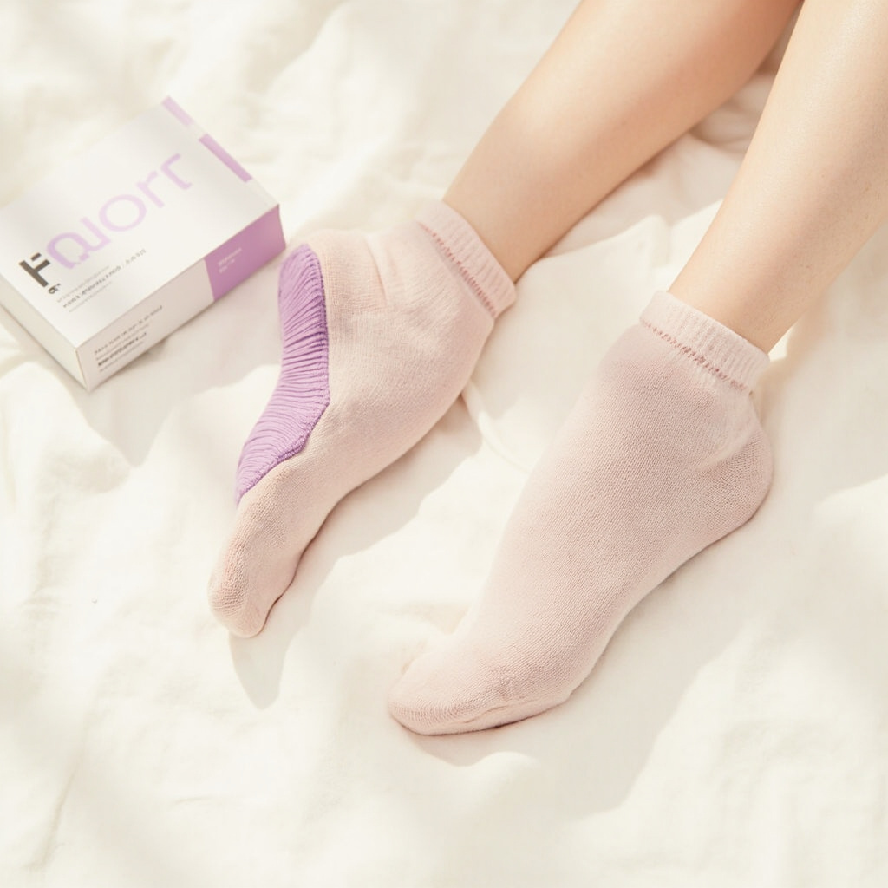

找到你的節奏：如何建立每日的輕運動習慣
Find Your Rhythm: Building a Daily Movement Habit
早上六點四十七分，鬧鐘響了。不是關於毅力，是關於找到那個願意開始的自己。

極簡主義：少即是多的運動穿搭
Minimalism: Less is More in Workout Style
當你的衣櫃只剩下必要的东西，選擇變成了一種本能而不是掙扎。

不只是襪子：reform. 的誕生故事
More Than Socks: The Birth of reform.
從第一雙樣品到現在的產品，這是我們三年來的故事。
五個動作，開啟你的每日晨間運動
Five Moves to Start Your Daily Morning Practice
不需要墊子，不需要裝備，只需要一個決定的開始。

為什麼我們只做一個產品線
Why We Make Only One Product Line
專注不是限制，是選擇把一件事做到極致。

我們的第一次線下活動
Our First Offline Event
三十個人，一個工作室，一個下午。

2026 春季色彩趨勢：柔霧粉與中性灰
Spring 2026 Color Trends: Muted Pink & Neutral Gray
新一季的色彩，從實驗室到伸展墊。

一雙襪子的旅程：從實驗室到你腳上
The Journey of a Sock: From Lab to Your Feet
經過四十二次測試，只為找到最完美的防滑解決方案。